You have seen what an agent can do. Before you can try it yourself, three things must be in place: an account that includes the agent, the agent program on your own computer, and one working conversation with it. This is the only unit where most of the work is setting things up, and it is the one where people most often get stuck. We go slowly.
Claude Code needs a paid Claude plan (Pro or higher) or API billing. Codex needs a ChatGPT account; Plus or higher is realistic.
Both are installed by pasting one line into a terminal. The terminal is just the place where you paste it.
The first start opens a browser window to sign in. After that, the agent runs in the terminal.
Your first conversation happens in an empty folder, so nothing of yours is at stake.
This is a practical unit. The exact commands live on the exercise page, which we update before each run. Using the terminal properly comes in Terminal survival kit.
Monday morning: you want to try this on a real task
Imagine a teacher who saw the live build in Why agentic AI? and wants to try it on their own course material on Monday. Between them and the first useful result stand:
an account: which plan? Is the free one enough? Does the university already pay for something?
an install: on a laptop where they have never opened a terminal;
a sign-in: linking the program on the laptop to the account in the browser;
a first test: how do they know it works?
Each step is small. Missing any one of them stops everything. This lecture walks the path once, so that you recognise each step when you do it.
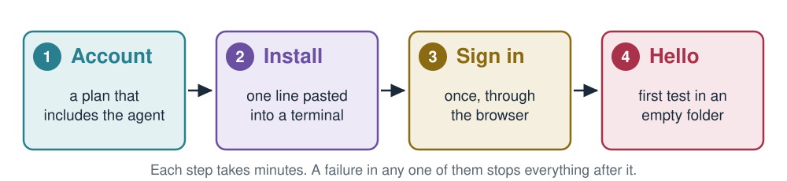
You need three things: a plan, a program and a place to type
An account with a plan that includes the agent. This is where the AI model runs and how usage is paid for.
The agent program installed on your computer. It reads your files, runs commands and talks to the model over the internet.
A terminal to start the program and talk to it.
Each tool (Claude Code, Codex) needs its own account and its own program. The terminal is the same for both.
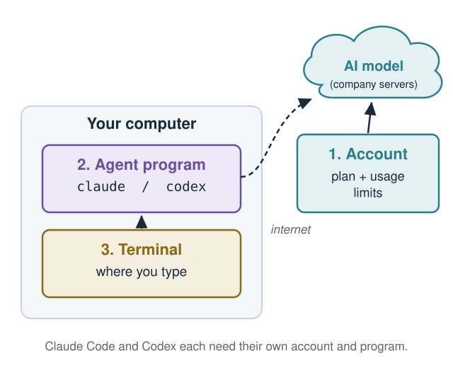
Claude Code needs a paid Claude plan; the free plan does not include it
Pro is the entry level that includes Claude Code. Max, Team and Enterprise include it too, with higher limits.
The free Claude plan does not include Claude Code.
Alternative: pay-as-you-go API billing through the Claude Console. You pay per use instead of per month.
Plans have usage limits that reset over time. Heavy days can hit them; the agent then tells you when you can continue.
We give no prices: they change. Links to the official plan pages are on the exercise page.
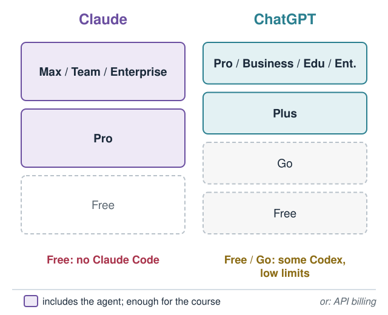
Codex comes with a ChatGPT account; Plus or higher is realistic
Codex is included across ChatGPT plans, including Free and Go, but with low limits there. On those plans, access to the terminal version may also be limited or still rolling out.
Plus or higher (Pro, Business, Edu, Enterprise) is what we recommend for the course.
You can also sign in with an OpenAI API key and pay per use, as with the Claude Console.
You sign in with the same account you use for ChatGPT in the browser.
Do you need both tools? For almost every unit, one is enough. Having both pays off in Parallel workers, where we compare them and let one review the other.
Your university may already pay for a plan: ask IT before you pay yourself
Institutional plans exist: Claude for Education, Claude Team/Enterprise, ChatGPT Edu/Enterprise.
Whether they include Claude Code or Codex depends on the institution’s workspace settings. An administrator can switch these on or off.
An institutional plan can also come with better data terms (no training on your data). That matters in Privacy, ethics and safety.
Ask IT: “Do we have a Claude or ChatGPT plan, and does it include Claude Code or Codex?”
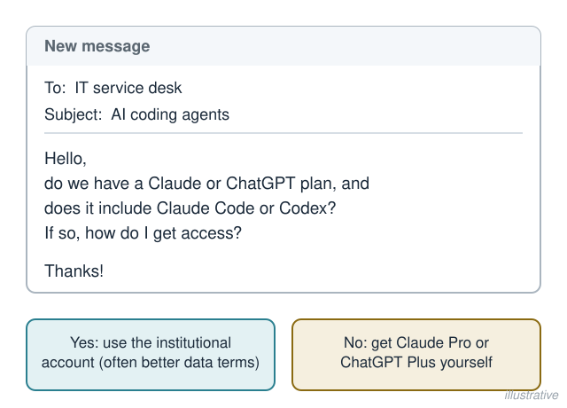
A subscription has a monthly cap; an API key has a meter
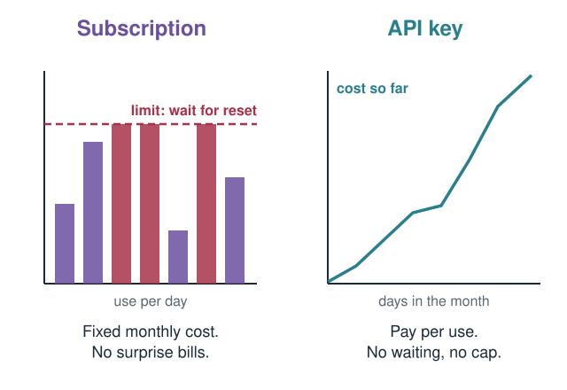
Subscription (Pro, Plus, …): a fixed monthly cost. When you reach the limit, you wait for it to reset. No surprise bills.
API key (Claude Console, OpenAI Platform): you pay per use. No waiting, but a long session can cost more than you expect.
For this course, use a subscription. It makes the cost predictable while you learn. An API key is for automation or for an institution that prefers usage billing.
Create a free GitHub account now, even though we need it only in Part 3
GitHub is where we will store, share and publish projects (GitHub, A course or project page).
A free personal account is enough. Educators can apply for extra benefits through GitHub Education.
Create it now: choosing a username and confirming the e-mail takes a few minutes, and it is one less thing to do later.
Pick a username you are happy to show colleagues. It appears in the web address of your project pages.
You do not need to do anything on GitHub yet.
Git, R, Python and Quarto can wait: the agent will install them with you
Later units use free software: git (version history), R and Python (analysis), Quarto (web pages).
You do not install them today.
In Terminal survival kit we let the agent check what is already there and install what is missing, explaining each step before it runs it.
On a managed laptop, some of these may need to come from IT’s software centre instead. We will say where.
The agent is a program on your computer, not a website
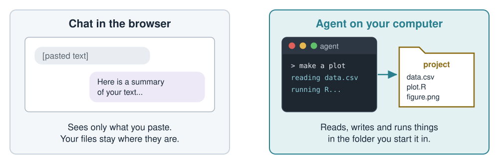
A chat runs in the browser. It sees only what you paste in.
An agent runs on your computer. It can read and change files in the folder where you start it, and run programs there.
That is why it must be installed, and why where you start it matters.
Desktop apps and editor extensions exist; we use the terminal version because it is the same everywhere
Both tools come in several forms:
a terminal program (Claude Code CLI, Codex CLI);
a desktop app (the Claude desktop app, the ChatGPT desktop app with Codex);
editor extensions (for example VS Code).
They share the same engine. The course uses the terminal version because it looks and works the same on Windows, macOS and Linux, and every feature appears there first.
The desktop app is a good fallback if the terminal install is blocked on your laptop.
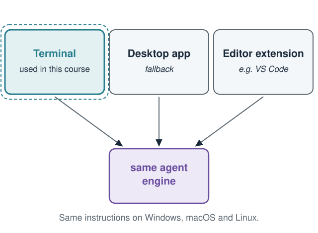
Opening a terminal takes one shortcut on each system
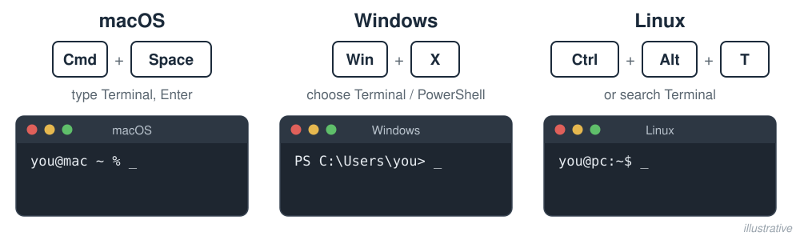
macOS:Cmd + Space, type Terminal, press Enter.
Windows:Win + X, choose Terminal or Windows PowerShell.
Linux:Ctrl + Alt + T, or search for Terminal.
On Windows, check that the prompt starts with PS
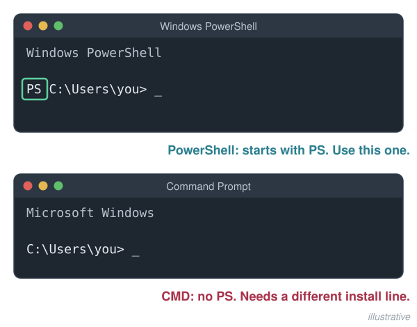
Windows has two command windows: PowerShell and the older Command Prompt (CMD). They need different install commands.
PowerShell shows PS C:\Users\yourname>. CMD shows the same without PS.
Use PowerShell. Do not pick the entry marked (x86): that is the 32-bit version and the tools refuse to run in it.
You do not need “Run as administrator”.
Installing is one pasted line per tool
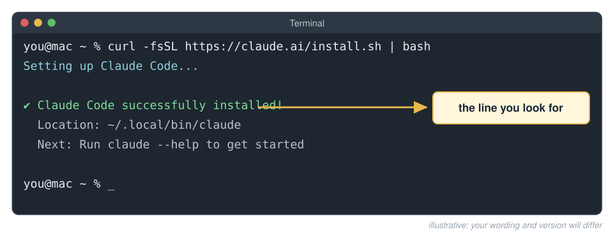
Paste the line, press Enter, wait. The download shows little or no progress. It ends with a message that the install succeeded, or with an error you can look up.
The install lines: one for macOS and Linux, one for Windows
macOS / Linux (Terminal)
Windows (PowerShell)
Claude Code
curl -fsSL https://claude.ai/install.sh \| bash
irm https://claude.ai/install.ps1 \| iex
Codex
curl -fsSL https://chatgpt.com/codex/install.sh \| sh
These were the official commands when this deck was written. Copy them from the exercise page, which we check before each run.
Alternatives exist: Homebrew on macOS, WinGet on Windows, npm (needs Node.js). Use them only if you already know them.
Codex on Windows now runs natively in PowerShell. WSL (Linux inside Windows) also works for both tools but is not needed for this course.
The install line downloads a program and tells the terminal where it is
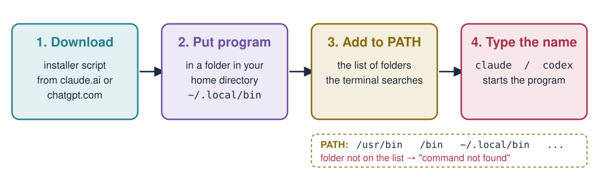
Download a small script from the company’s site and run it.
The script puts the program in a folder in your home directory (often .local/bin).
It adds that folder to the PATH: the list of folders the terminal searches when you type a command name.
Then typing claude or codex starts the program.
Pasting an install line means trusting where it comes from
The pattern “download a script and run it” is normal for these tools, and it gives that script your user’s rights.
Check the address: claude.ai for Claude Code, chatgpt.com for Codex.
Copy from the official documentation or the course page, never from a forum, a video comment or an e-mail.
If a page asks you to paste a command to “fix” something urgent, stop and ask.
Close the terminal and open a new one before you test
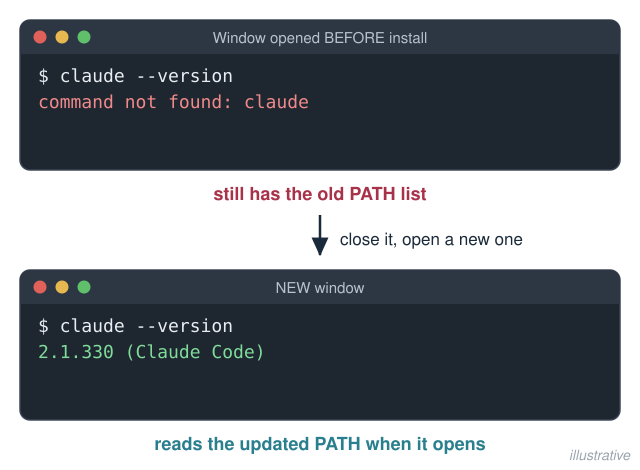
A terminal reads the PATH when it opens. A window that was open during the install may not know about the new program yet.
So: close the window, open a new one, then test.
If you use a terminal inside an editor (VS Code), restart the editor.
Check the installation: the version command prints a number
claude--version
2.1.330 (Claude Code)
codex--version
codex-cli 0.171.0
A version number means the program is installed and the terminal can find it.
Your numbers will be higher: both tools update often.
An error such as command not found or is not recognized means the terminal cannot find it yet. We fix that later in this lecture.
The first start opens your browser to sign in
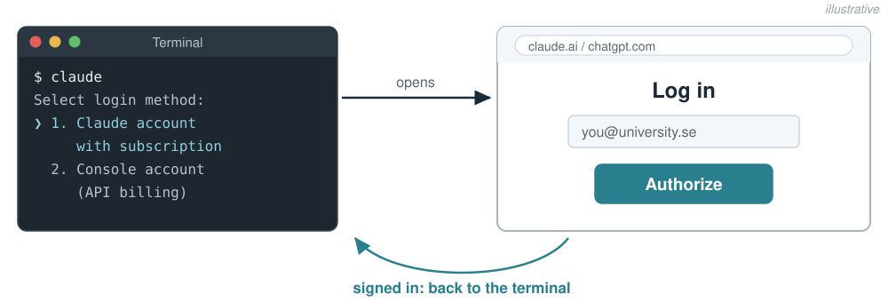
Type claude (or codex) and press Enter. The first time, it asks how you want to sign in. Choose your subscription (Claude account / Sign in with ChatGPT).
A browser window opens. Log in as usual, approve, and go back to the terminal.
If no browser opens, the terminal shows a link (Claude Code: press c to copy it). Paste it into your browser.
Make an empty folder for your first conversation
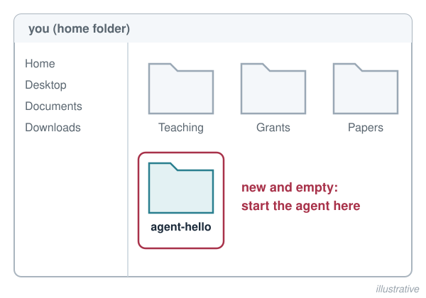
The agent works in the folder where you start it.
For the first test, make a new, empty folder, for example agent-hello in your home folder.
Start the agent inside that folder. The exercise page gives the two commands.
Not in your home folder, Desktop or Documents itself: those are full of your files.
The first hello: ask the agent what it can see
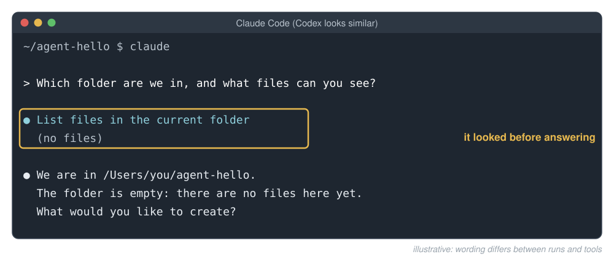
The folder is empty, so a good answer says so. If it claims to see files, something is off: you started it in the wrong folder, or it is guessing.
The agent asks before it changes things; say yes for now, we discuss this next time
When the agent wants to create or change a file or run a command, it may stop and ask.
For the test file in your empty folder, choose Yes.
On first start, it may also ask whether you trust this folder. For your own empty folder: yes.
Reading these questions properly, and the different permission modes, is the core of Terminal survival kit.
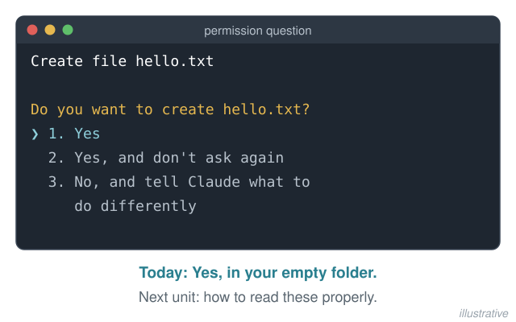
Leave the agent with /exit; your conversation is saved
Claude Code
Codex
Leave
/exit, or Ctrl + D twice
/exit or /quit, or Ctrl + C
Stop it mid-answer
Esc
Esc
List commands
/help
type /
Continue the last conversation
claude -c
codex resume
Commands that start with / are instructions to the program, not to the AI.
Keep the tools up to date: Claude Code updates itself, Codex needs a nudge
Claude Code (official installer)
Updates itself in the background; the new version is used next time you start it.
To update now: claude update.
Health check: claude doctor.
Codex
Update with codex update, or run the install line again.
Homebrew/npm installs update through those tools.
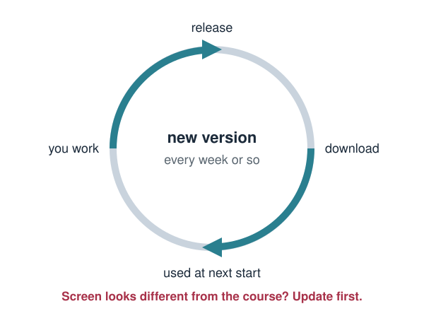
New versions arrive weekly or faster. When something in this course looks different on your screen, update first.
“Command not found” means the terminal cannot find the program yet
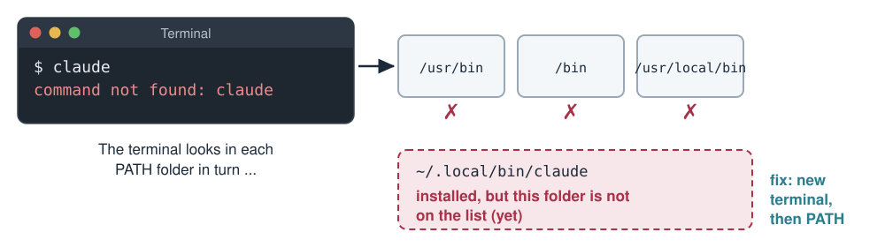
Open a new terminal and try again. This fixes most cases.
Read the end of the install output: it often prints a “Setup notes” line with the exact fix.
Still not found: the program’s folder is not on the PATH. The exercise page gives the one-time fix for your system.
Only then reinstall.
Windows errors that mean “wrong kind of terminal”
What you see
What it means
Fix
'irm' is not recognized
You are in CMD, not PowerShell
Open PowerShell (Win + X)
The token '&&' is not a valid statement separator
You pasted the CMD line into PowerShell
Use the PowerShell line
'bash' is not recognized or parameter name 'fsSL'
You pasted the macOS/Linux line
Use the Windows line
does not support 32-bit Windows
You opened PowerShell (x86)
Open the entry without (x86)
On a university-managed laptop, the install may be blocked: ask IT, or use the desktop app
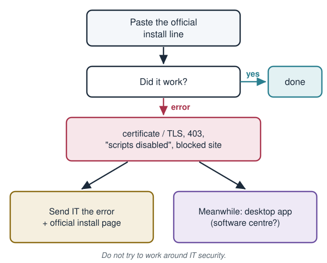
Both installers put the program in your own user folder and do not need admin rights.
But IT policy can still block downloads, scripts, or the companies’ websites. Typical signs: certificate or TLS errors, “running scripts is disabled”, or a 403 error.
Do not try to work around IT security. Send them the error message and the official install page.
Meanwhile, the desktop app may be available from your software centre.
Where this goes wrong
Wrong plan. Signed in with a free Claude account: Claude Code will not work. Check which account the browser was logged into.
Wrong account. You have both a personal and an institutional login. The browser picks the one it remembers. Log out in the browser first if needed, then use /login in Claude Code or /logout and restart in Codex.
Old terminal window. The program is installed but “not found”. Open a new window.
Copied an outdated command from a blog or video. Use the exercise page.
Started in the wrong folder. The agent sees your home folder or Desktop. Exit, move to your empty folder, start again.
Region. Both services are available only in supported countries; an “unavailable in region” message is not something you can fix locally.
Summary
Concept
Key fact
Claude Code account
Pro or higher (Max, Team, Enterprise), or API billing. The free plan does not include it.
Codex account
Any ChatGPT plan includes some Codex; Plus or higher is realistic.
Institutional plans
May include the agents; ask IT whether they are switched on.
GitHub
Free account; create it now, use it in Part 3.
Install
One official line per tool, pasted into Terminal (macOS/Linux) or PowerShell (Windows). No admin rights needed.
PATH
The list of folders the terminal searches. “Command not found” usually means: open a new terminal.
First start
Sign in through the browser, once per computer.
First hello
In an empty folder: “What can you see?” Check the answer yourself.
Updates
Claude Code updates itself (claude update); Codex: codex update or rerun the installer.
Next (Terminal survival kit): files, folders and paths; moving around in the terminal; reading and approving what the agent wants to do; permission modes; letting the agent install R, Python and git for you.